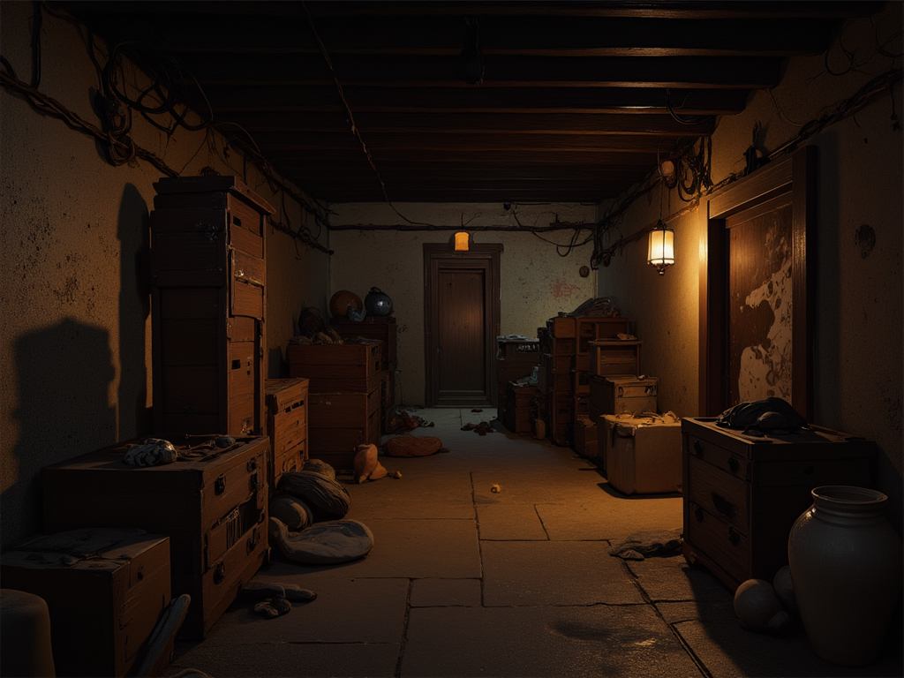

Um dia desses, encontrei no porão da minha casa, um mapa, de um tesouro, com algumas pistas para encontrá-lo e eu decidi segui-las!
Você começa a ir em direção ao quarto, mas a porta está fechada, só seus pais sabem aonde a chave está.
Você vai até o lago, mas não sabe bem pelo o que está procurrando.
Você acha, mas está em um conjunto de várias chaves.

Eles não estão em casa, e você não quer deixar eles estressados.
Você acha um papel com palavras estranhas.
Você consegue achar a chave certa e abre a porta.